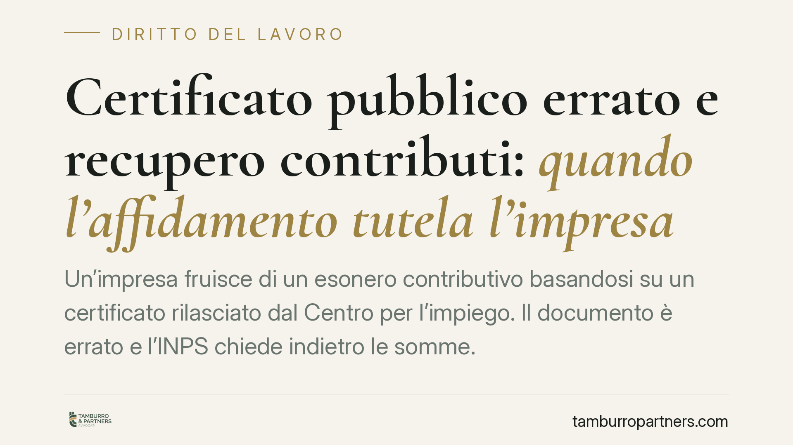

Certificato pubblico errato e recupero contributi: quando l'affidamento tutela l'impresa
Un'impresa fruisce di un esonero contributivo basandosi su un certificato rilasciato dal Centro per l'impiego. Il documento è errato e l'INPS chiede indietro le somme. Un giudice di merito ha escluso la responsabilità del datore, applicando il principio del legittimo affidamento anche in materia previdenziale. Un tema che tocca ogni impresa che si affida ad attestazioni pubbliche per accedere a benefici.

Il caso
Un datore di lavoro assume un lavoratore e fruisce di un esonero contributivo. Il diritto al beneficio dipende da un requisito attestato da un documento pubblico: il Modello C2 Storico, rilasciato dal Centro per l'impiego, che ricostruisce la storia lavorativa del soggetto.
Quel certificato conteneva un errore. Sulla base di quell'attestazione, però, l'impresa aveva applicato l'esonero. Accortasi dell'errore, l'amministrazione previdenziale ha emesso un avviso di addebito per recuperare le somme non versate.
Un Tribunale in sede lavoro ha annullato l'avviso, escludendo che l'impresa dovesse rispondere di un errore imputabile alla pubblica amministrazione.
> Nota sugli estremi: al momento della redazione non risultano confermati numero e anno di pubblicazione della pronuncia. Riportiamo il principio giuridico affermato, non gli estremi, in attesa di verifica sulla fonte ufficiale.
Inquadramento normativo
Il riferimento è l'art. 10 della Legge 27 luglio 2000, n. 212 (Statuto dei diritti del contribuente). Il comma 1 stabilisce che i rapporti tra amministrazione e contribuente sono improntati al principio della collaborazione e della buona fede.
Il comma 2 è il cuore della questione: non sono irrogate sanzioni né richiesti interessi moratori al contribuente che si sia conformato a indicazioni contenute in atti dell'amministrazione, o abbia tenuto un comportamento posto in essere a seguito di fatti direttamente conseguenti a ritardi, omissioni o errori dell'amministrazione stessa.
La norma nasce in ambito tributario. La lettura del giudice di merito ne estende la logica al rapporto previdenziale, valorizzando il legittimo affidamento del privato su un atto pubblico. È un'operazione interpretativa: il principio di buona fede è generale, ma la sua applicazione ai contributi previdenziali non costituisce, allo stato, orientamento consolidato.
Perché conta per i datori di lavoro
Molti benefici contributivi presuppongono requisiti che l'impresa non può accertare da sé: la storia lavorativa del dipendente, il suo stato di disoccupazione, l'assenza di rapporti pregressi con lo stesso datore. Per questo il legislatore mette a disposizione attestazioni pubbliche.
Se l'impresa agisce sulla base di quelle attestazioni e queste risultano errate, il problema si sposta: non è l'impresa ad aver sbagliato, ma l'ente che ha certificato un dato non veritiero.
La lettura più significativa della pronuncia è che l'esonero da responsabilità non riguarderebbe solo sanzioni e interessi — testualmente previsti dall'art. 10 comma 2 — ma anche l'importo capitale, cioè i contributi stessi. Va detto con chiarezza: si tratterebbe di una lettura del giudice di merito, non di un principio stabilizzato. La formula usata dalla norma copre espressamente sanzioni e interessi; l'estensione al capitale poggia sul principio generale di affidamento e resta contestabile.
I limiti della tutela
L'affidamento non è una scriminante automatica. Perché operi occorre che:
- il comportamento dell'impresa sia in buona fede;
- l'errore dell'amministrazione non fosse riconoscibile con l'ordinaria diligenza;
- il datore si sia effettivamente conformato all'atto pubblico, senza forzarne il contenuto.
Se l'errore era palese, o se l'impresa disponeva di elementi che lo rendevano evidente, la tutela viene meno. E trattandosi di una decisione di primo grado, il quadro resta suscettibile di revisione nei gradi successivi.
Cosa fare in concreto
- Conservare la documentazione originale. Ogni certificato, modello o attestazione pubblica su cui si è basata la fruizione di un beneficio va archiviato integralmente, con data e provenienza.
- Tracciare il momento della verifica. Documentate quando e come avete acquisito l'attestazione, per dimostrare che l'affidamento era attuale rispetto all'accesso al beneficio.
- Non ignorare l'avviso di addebito. I termini per l'opposizione sono brevi e perentori: la mancata reazione consolida la pretesa a prescindere dal merito.
- Verificare la riconoscibilità dell'errore. Ricostruite se, alla data della fruizione, l'impresa avesse strumenti per accorgersi dell'errore contenuto nell'atto pubblico.
La difendibilità di una posizione di questo tipo dipende dalla documentazione conservata e dalla condotta effettivamente tenuta: è opportuna una valutazione tecnica del caso concreto prima di ogni iniziativa.
Conclusione
Il principio è netto nella sua ratio: chi si fida di un atto pubblico non deve sopportare le conseguenze di un errore altrui. L'applicazione ai contributi previdenziali, però, non è ancora consolidata e va maneggiata con prudenza, senza leggere una singola pronuncia di merito come una regola generale.
---
Contributo informativo a cura di Tamburro & Partners Avvocati. Non costituisce parere legale.
Ogni storia di lavoro ha i suoi tempi.
Se gestisci HR e vuoi un confronto su contenzioso, ispezioni o licenziamenti, scrivi allo studio. Ti rispondiamo entro un giorno lavorativo.